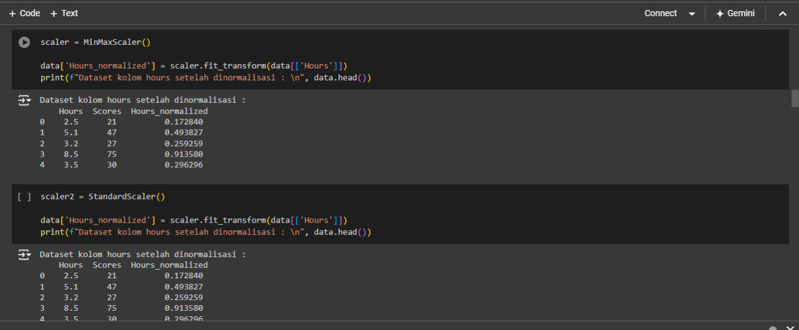

Data Analyst
A data analyst is a professional responsible for collecting, processing, and analyzing data to produce information that can support decision-making.

In this project, I performed data collection, processing, normalization, and clustering. The collected data was then processed to produce meaningful weighted values.
What is the point?
By clustering data, the results can provide insights for data collectors. For instance, in the case study I conducted, I used data from individuals using YouTube. I gathered information on the average hours they spent on YouTube per day and what content they watched. This allowed me to conclude that the viewing preferences of children, teenagers, and adults differ significantly.
Additionally, I discovered the total time they spent watching content in a day. More than 60% of children and teenagers spent their time watching entertainment. Specifically, among teenagers, 40% of female respondents watched K-Pop, while 34% of male respondents watched educational content, gaming, and comedy. This indicates that data clustering based on viewership by demographic groups reveals a preference for entertainment. Consequently, companies and entertainment managers can easily advertise through YouTube, as it is predominantly watched by teenagers.

Albert Einstein
Education is not the learning of facts, but the training of the mind to think.